Review the model together — without turning every reviewer into a modeler.
A sewer master planning project brings GIS staff, modelers, engineers, project managers, clients, and stakeholders together. The model may be sophisticated, but review often still happens through static exports, spreadsheets, plots, PDFs, PowerPoint slides, and meeting notes.
ICM Viewer provides a read-only way for reviewers to explore the shared model from the perspective of their role.
1. Master planning workflow
The Viewer does not replace the master planning workflow. It creates a shared review layer across it. The modeler continues to build and analyze the model; reviewers can inspect the appropriate shared version and reuse the artifacts already created during good modeling practice.
2. Getting Started
This section covers only what a reviewer needs before using the role-based workflows: install the Viewer, sign in, and open the shared cloud database.
Install and sign in
- Open the official InfoWorks ICM Viewer download page ↗.
- Download and install the Viewer. If your project team uses a specific ICM release, confirm the Viewer version with the project team before installation.
- Start InfoWorks ICM Viewer.
- When prompted, continue with Autodesk browser sign-in and use the Autodesk account invited to the project.
- Return to Viewer after the browser confirms sign-in.
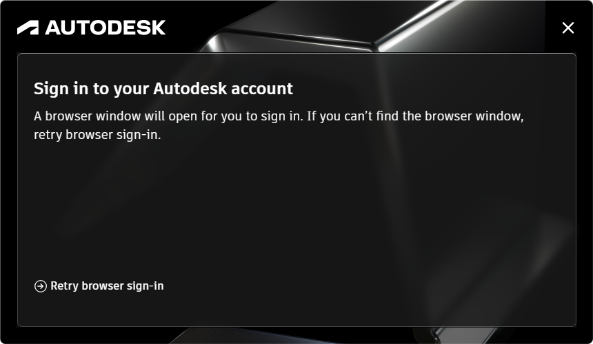
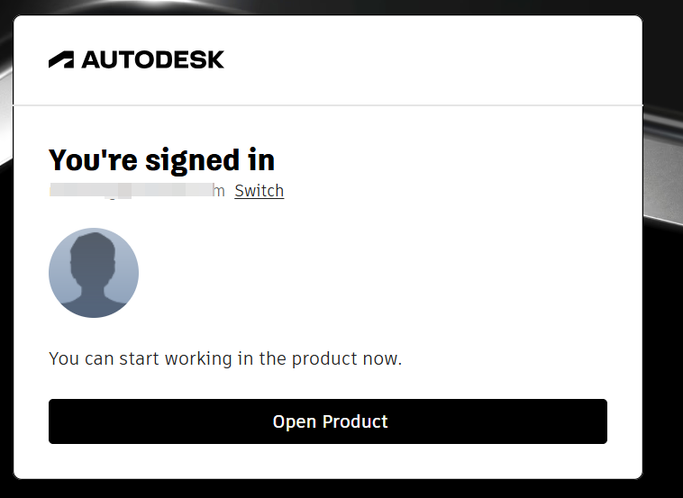
Open the shared cloud database
- In Viewer, select Open database.
- Select the cloud Hub.
- Select the Project.
- Select the database and choose OK.
The project administrator must grant access to the project before it appears for the reviewer.

GIS already gives you plan-view mapping and attributes. Viewer adds the vertical, connected-system context that makes patterns easier to see — and it lets the GIS reviewer reuse queries, flags, selection lists, themes, and saved views created naturally during model QA/QC.
Open the review area
Use a prepared query, selection list, flag, theme, or saved view from the modeler to locate the issue.
See the pattern
Open the GeoPlan and long section to review many connected pipes together in vertical context.
Investigate the source
Inspect the suspicious records and compare them with the authoritative GIS, drawings, or other source information.
Close the loop
Correct the authoritative GIS outside Viewer and return the update to the modeler/project team.
Open the review area
What you do. Start from review aids already created by the modeler during QA/QC. This keeps the GIS reviewer focused on the places that need attention instead of recreating the modeler's analysis.
- Stored query: drag the prepared query into the GeoPlan to identify objects that meet the review rule.
- Selection list: drag the saved selection list into the GeoPlan and zoom to the selected objects.
- Data flags / themes: use prepared flags and thematic displays to understand why a value is being highlighted.
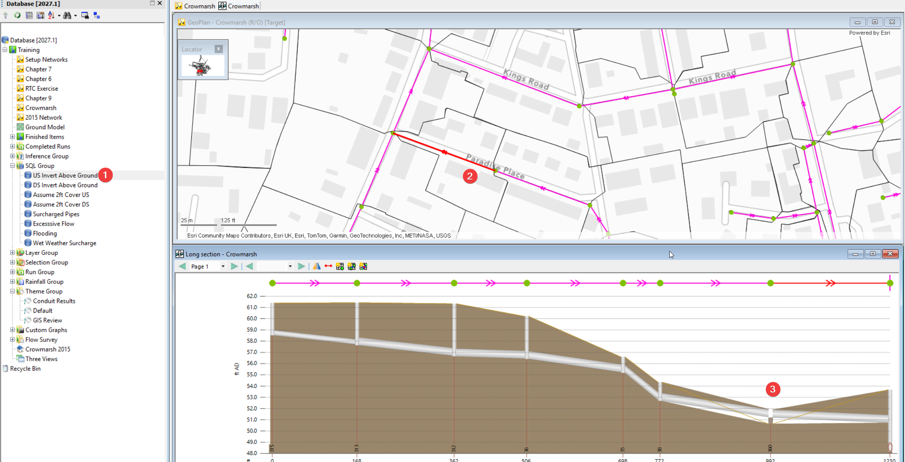
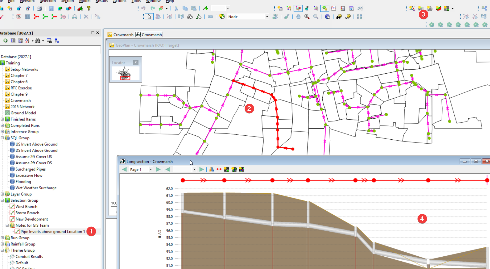
See the pattern
What you do. Use the GeoPlan for spatial context, then use the long section to see how dozens of connected pipes fit together vertically.
- Open the network in the GeoPlan.
- Optionally display the GIS basemap/layers and a prepared GIS review theme.
- Select the Long Section Pick tool.
- Click the starting node or link.
- Continue the profile by clicking connected downstream links.
- Review ground, inverts, pipe sizes, slopes, and any prepared data flags or profile table fields.
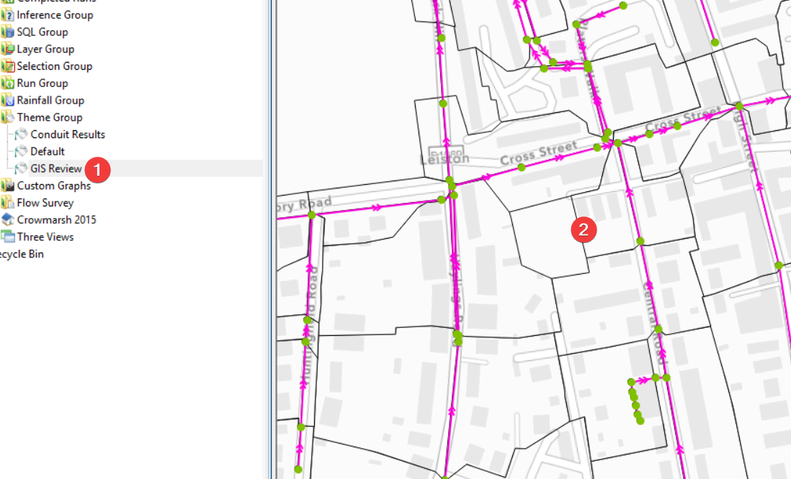
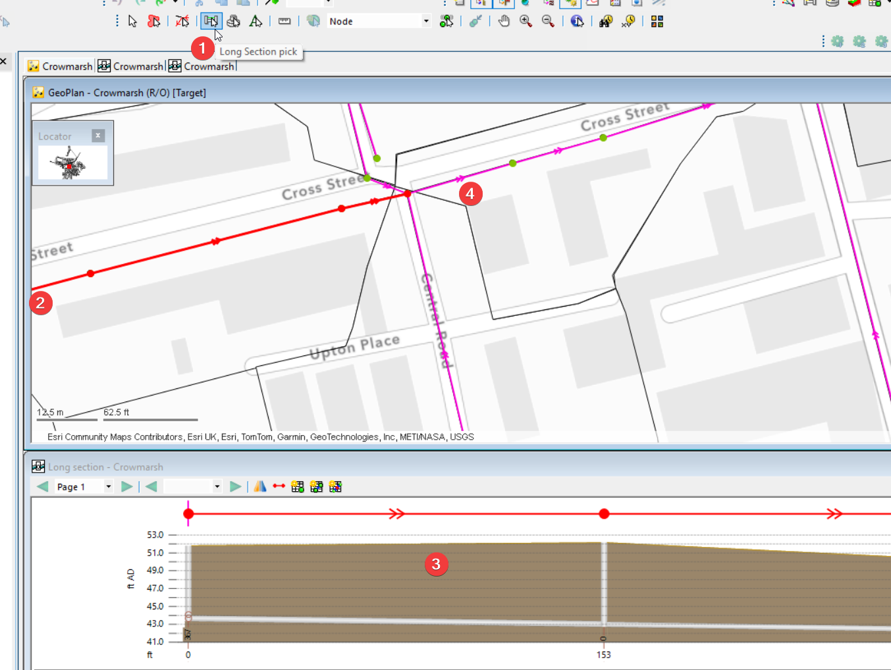
Investigate the source
What you do. Once a pattern or suspicious value is visible, inspect the object values and determine what authoritative source should be used to resolve it.
- Check the selected object values in Viewer.
- Compare the highlighted value with authoritative GIS, record drawings, survey, or other project records outside Viewer.
- Distinguish between a source-data problem and a modeled/assumed value that simply needs documentation.
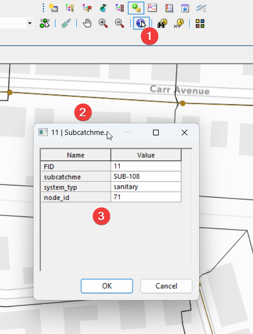
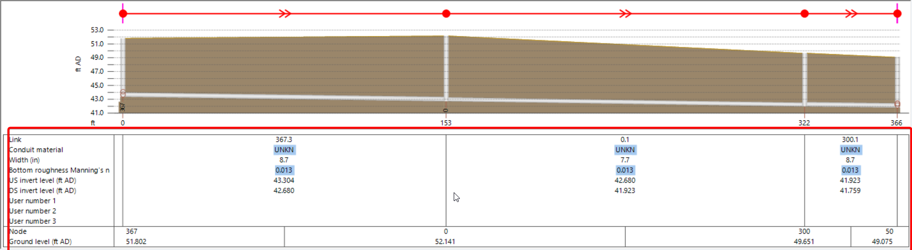
Close the loop
What you do. Viewer is read-only. The GIS team corrects the authoritative source in GIS, then provides the update back to the modeler/project team for the next review-ready model version.
Bring GIS context into the GeoPlan
If the project uses ArcGIS layers for context, configure the GeoPlan once and reuse the view during review.
- Open the network and confirm the coordinate system.
- Add the basemap.
- Add the GIS layers.
- Adjust display settings for each layer.
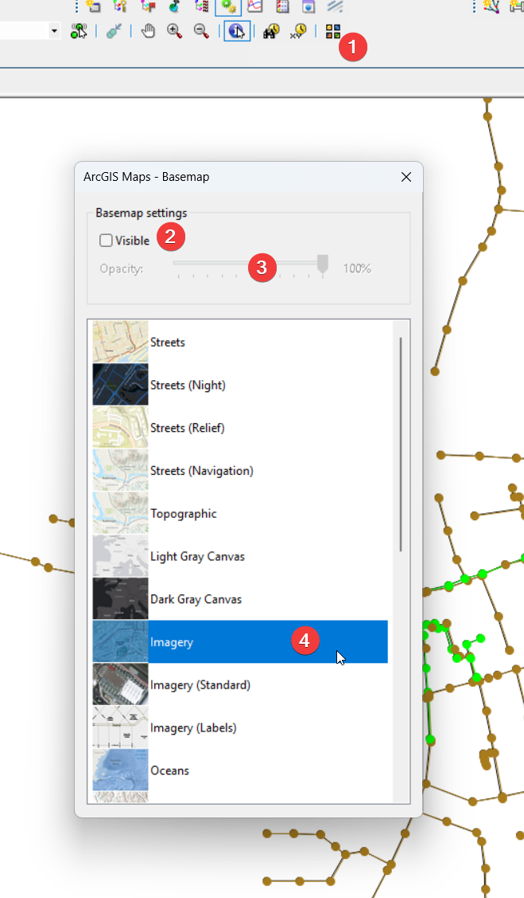
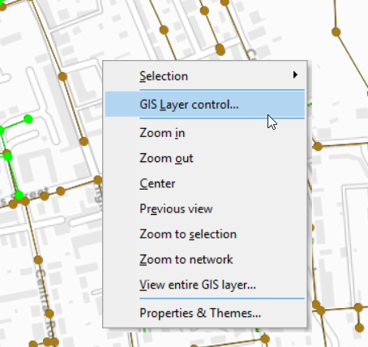
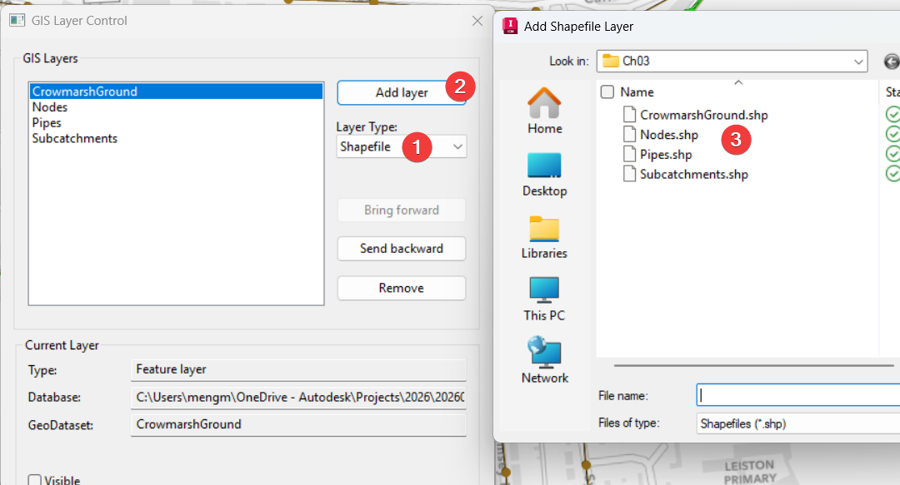
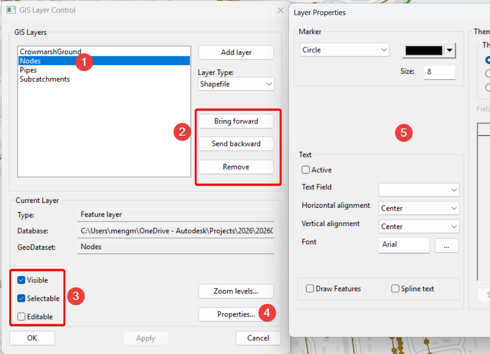
A flood or surcharge location is often the symptom, not the cause. Viewer lets an engineering reviewer cast a wider net across the network and through time instead of being limited to a handful of plots prepared in advance.
See the big picture
Open completed results and a prepared thematic map to see where the system is showing problems.
Follow the problem through the system
Use the long section and HGL to look upstream and downstream from the visible symptom.
Follow the problem through time
Replay results and review HGL, depth, flow, or velocity plots as conditions change.
Compare alternatives
Open the base and alternative results together and compare the same locations and profiles.
See the big picture
What you do. Start with the completed simulation results and a prepared result theme. Review maximum or summary conditions to identify where surcharge, flooding, depth, flow, or other key indicators are concentrated.
- Open the completed results.
- Apply the prepared result theme to the GeoPlan.
- Use maximum/summary values to locate the affected area.
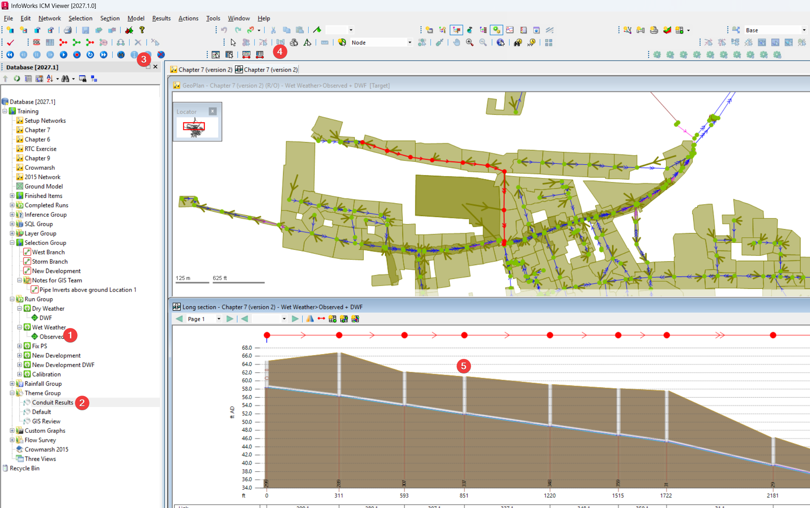
Follow the problem through the system
What you do. Use the long section/HGL to move beyond the single flooded or surcharged location. Follow the branch upstream and downstream and look for restrictions, backwater, steep changes, storage effects, or other connected behavior.
- Select the affected branch with the Long Section Pick tool.
- Display the profile and HGL/water level.
- Extend the long section upstream or downstream as needed.
- Ask: Is this where the problem begins, or just where it becomes visible?
Follow the problem through time
What you do. Sewer problems are not only spatial; timing matters. Replay the simulation while watching the profile/HGL and the relevant depth, flow, or velocity plots.
- Use the replay/time controls to move through the event.
- Watch how HGL/water level changes through the long section.
- Use plots to connect the timing of depth, flow, and velocity changes with what you see on the map/profile.
- Ask: What happens first, and how does the effect propagate?
Compare alternatives
What you do. Compare the existing/base results with an alternative prepared by the modeling team. Keep the focus on the same problem area so the impact of the change is easy to see.
- Open the alternative results.
- Open the base/existing results for comparison.
- Display the same HGL/profile and plots for both results.
- Ask: What improved? What did not? Did the problem move somewhere else?
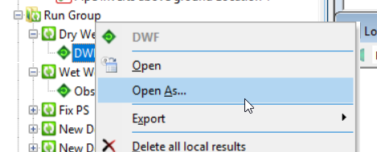
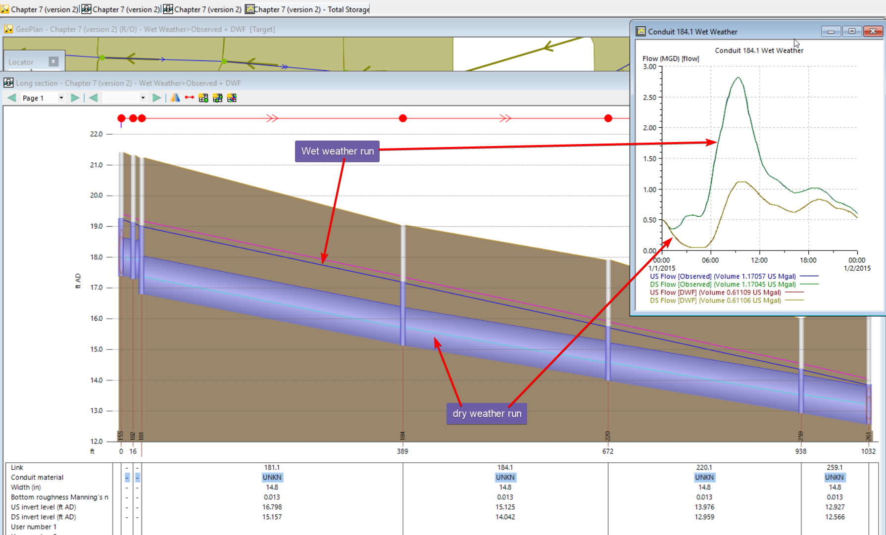
The report, presentation, and meeting minutes remain the formal project communication. Viewer acts as an interactive visual companion: when something in those documents raises a question, the stakeholder can locate it in the model, see it in context, and better understand what the project team is describing.
Read about it
Identify the issue, location, figure, scenario, or recommendation you want to understand from the report or meeting notes.
Find it in Viewer
Open a prepared review view or navigate to the location, asset, or scenario referenced by the project team.
Explore it in context
Zoom in, zoom out, pan to nearby areas, and open the relevant profile or result when more context helps.
Understand the recommendation
Open the prepared proposed/alternative view and compare it with the existing condition.
Read about it
What you do. Start where stakeholders already work: the report, presentation, or meeting minutes. Note the location, issue, figure, scenario, or recommendation that you want to understand better.
Find it in Viewer
What you do. Use a prepared review view from the project team or navigate the GeoPlan to the referenced area. The goal is not to recreate the analysis — it is to connect a statement in the report or meeting to a real place in the modeled system.
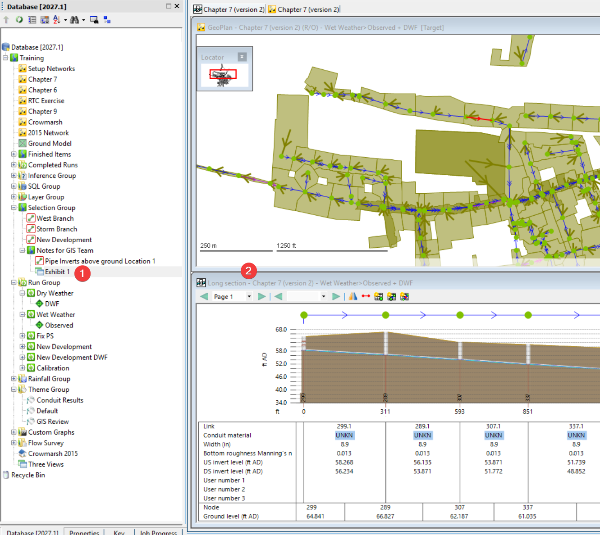
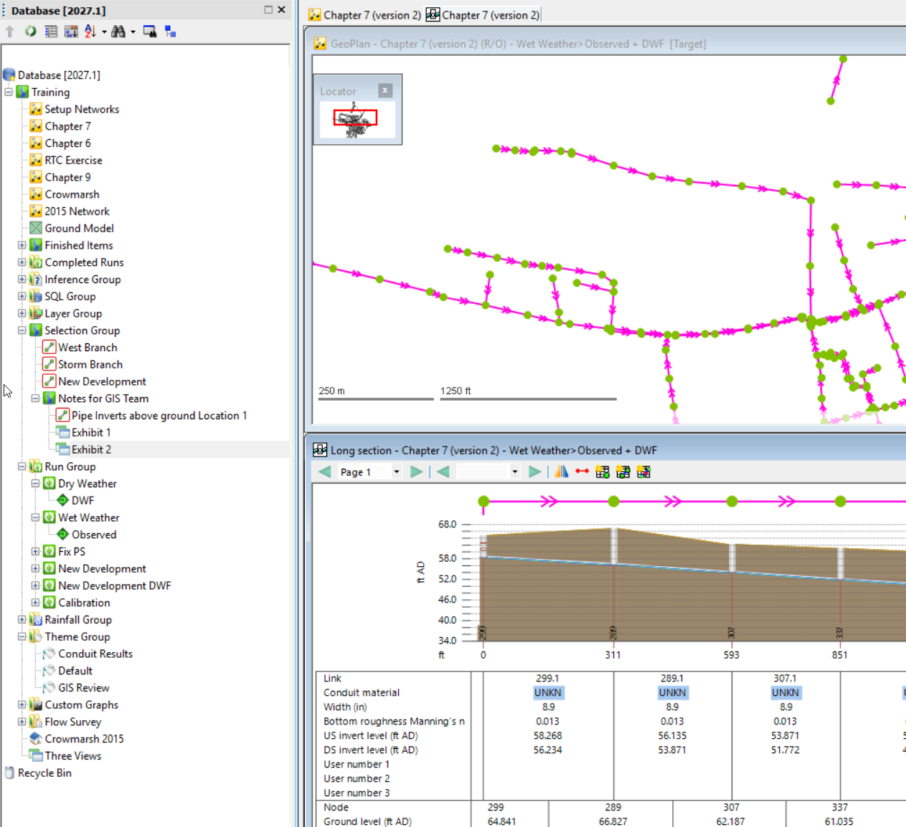
Explore it in context
What you do. Use Viewer like an interactive map for the master plan.
- Zoom out to understand the neighborhood, basin, or surrounding system.
- Zoom in to look at the specific assets or location.
- Pan upstream/downstream or to adjacent areas.
- Open a prepared profile or result view when that makes the explanation clearer.
Understand the recommendation
What you do. When the report discusses a proposed improvement or alternative, open the prepared existing/proposed results or scenario view and look at the same area.
The stakeholder does not need to validate the hydraulic analysis. The goal is simply to answer: What is being proposed, where is it, and what changes?
6. Quick Reference
The three workflows use the same structure: Step → What you do → Outcome. The diagrams are the visual summary; the detailed sections tell you how to repeat the workflow.
| Review workflow | Core question | Primary Viewer tools | Outcome |
|---|---|---|---|
| GIS See the profile, not just the numbers. | Where does the source data need attention? | GeoPlan, long section, flags, queries, selection lists, themes | Identify where authoritative GIS needs investigation or correction. |
| Engineering Understand why it floods, not just where. | What is actually causing the problem, and what works? | Thematic results, HGL/profile, replay, plots, scenario comparison | Treat the cause rather than only the visible symptom. |
| Stakeholders & Clients Read it in the report. Understand it with Viewer. | What does this part of the report mean in the actual system? | Prepared views, GeoPlan navigation, profile/results, scenario view | Understand the planning story with less effort. |